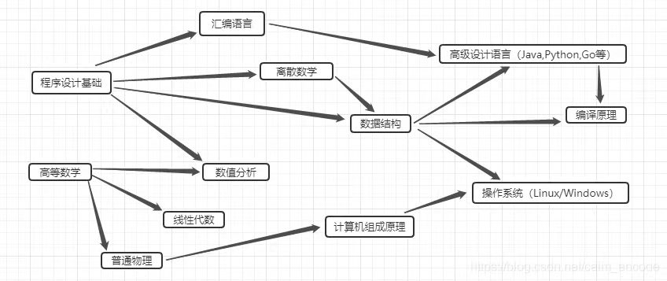

EXCELLENCY
PERSERVERANCE
CONTINUOUS EFFORT MAKES SUCCESS
一、专业就业方向及前景分析
我现在所学的是计算机专业，我自己也比较喜欢这个专业，所以以后仍然想从事这个方向。虽然受金融危机的影响，但计算机专业还是具有着良好的就业前景。
二、职业目标定位
1个人职业定位的swot分析：
内部环境因素
a 优势因素（s）
a、精力旺盛、热情； b、性情平和、乐于助人； c、富于创新精神。
b 弱势因素（w）
a、工作中有时没有自信；b、有时因急于迎接新挑战，在准备不够充分的情况下开始工作；c、过于重视上级对自己提出的意见。
2外部环境因素
c 机会因素（o）
a、国人对电子产品的要求越来越高，电子产品很有市场；b、专业知识与营销技巧兼备的人才缺乏；c、当今世界，信息流比较重要，适合现代社会的需要。
d 威胁因素（t）
a、竞争激烈b、自己能力不是很到位
swot总结：努力改变能改变的，适应不能改变的。对于外部环境因素，只有让自己适应它，抓住机遇，迎接挑战。
三、大学期间学习计划：
学习不仅是为了以后的工作，最重要的是它能让你终身收益。我一直坚信“活到老，学到老”的格言。无论怎样，学生最首要的任务就是学习。如果抛开学习，那么一切都无从谈起。在数字化、信息化的时代对计算机知识的掌握尤为必要。所以我对自己的大学生涯作出以下简短设计。
首先，要认真听课，保证学习成绩优秀。我认为，眼光应当放远一些，在我的大学时代多方面培养自己，丰富知识，提高综合素质，而不是急功近利，纯粹为了就业而学习。
1、认真学好专业知识和其他基础学科，坚信基础的东西一定是最重要的。注意提高自身的基本素质，通过参加各种社团等组织，锻炼自己的各科能力，同时检验自己的知识技能。
2、做一些兼职，社会实践活动，同时在课余时间从事一些与自己未来职业有关的专业类的工作，进一步提高自己的责任感、主动性和掌
3、证书大突破：考取英语四、六级。以及其他相关证书。
四、为人处世方面
2、最终身边的每一个人，不管他（她）有什么性格，学习优秀的人，感化恶搞的人，用一颗真诚的心去对待他们。
3、抓住每一个锻炼自己的机会，这样的机会不是每个人都有，全力以赴完成班级和学院本职工作。
我现在所学的是计算机专业，我自己也比较喜欢这个专业，所以以后仍然想从事这个方向。虽然受金融危机的影响，但计算机专业还是具有着良好的就业前景。选择计算机专业，在就业方面有三大特点：一是就业空间大，二是就业高工资，三是高就业。
企业是计算机人才需求的主体。近年来，计算机专业毕业生到企业从事计算机应用和技术开发的比例逐年增加，在经济发达地区已成为就业的主渠道。在全国约3000家大型企业中，只有5%的企业信息化建设进入成熟阶段，国有企业吸纳毕业生潜力巨大。高新技术企业发展迅速和要求员工素质高的特点，使其成为吸收计算机专业大学生的主要企业单位。外国公司涌入我国，需要招聘大批高素质的计算机人才，毕业生的就业选择和人才流动会更偏向外资企业。
